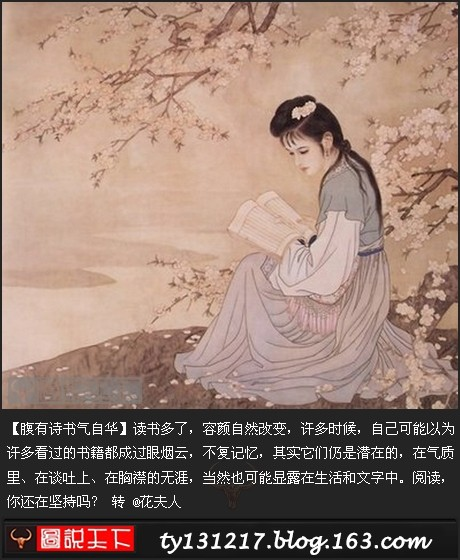

Conversation with 81184027 at Fri 10 Jan 2014 01:33:57 PM CST on 154115835 (webqq)
(01/10/2014 08:36:02 AM) 柠檬-杭州: “富人通吃”，违反党纪国法 在中国制造人口爆炸的张艺谋因超生被罚款748万元
谐音:去死吧！:face73: 请大家多多转发
(01/10/2014 09:34:23 AM) 埃及无雪: 新闻天天都写这些呢
(01/10/2014 09:34:02 AM) 埃及无雪: :face97::face97::face97:，这样算负面的话是否有点牵强
(01/10/2014 08:36:57 AM) 柠檬-杭州: 光 我觉得你说负面的东西太多了 你要不要看 心理医生 ？
(01/10/2014 11:12:40 AM) 埃及无雪: :face101::face101:
(01/10/2014 08:37:24 AM) 柠檬-杭州: 作为群主 应该传播正能量！！
(01/10/2014 11:12:37 AM) 埃及无雪: 一牛人竟然对出了千古绝对！当时的上联，传说苏轼及后人都没能对上：游西湖，提锡壶，锡壶掉西湖，惜乎锡壶；牛逼的下联：听物理，如雾里，雾里看物理，勿理物理
(01/10/2014 12:20:42 PM) 4085183449: 1月10日，2014年的第10天。
愿我们收获活水吗哪，发出对神的感谢赞美。
愿我们跟随主，走荣神、益人、自己得操练的道路
旧约 创世记 23:-24:51
诗 篇 9:13-20
箴 言 3:1-6
新约 马 太 8:1-17
有代祷事宜请告知
(01/10/2014 08:36:02 AM) 柠檬-杭州: “富人通吃”，违反党纪国法 在中国制造人口爆炸的张艺谋因超生被罚款748万元
谐音:去死吧！:face73: 请大家多多转发
(01/10/2014 09:34:23 AM) 埃及无雪: 新闻天天都写这些呢
(01/10/2014 09:34:02 AM) 埃及无雪: :face97::face97::face97:，这样算负面的话是否有点牵强
(01/10/2014 08:36:57 AM) 柠檬-杭州: 光 我觉得你说负面的东西太多了 你要不要看 心理医生 ？
(01/10/2014 11:12:40 AM) 埃及无雪: :face101::face101:
(01/10/2014 08:37:24 AM) 柠檬-杭州: 作为群主 应该传播正能量！！
(01/10/2014 11:12:37 AM) 埃及无雪: 一牛人竟然对出了千古绝对！当时的上联，传说苏轼及后人都没能对上：游西湖，提锡壶，锡壶掉西湖，惜乎锡壶；牛逼的下联：听物理，如雾里，雾里看物理，勿理物理
(01/10/2014 12:20:42 PM) pastorqi: 1月10日，2014年的第10天。
愿我们收获活水吗哪，发出对神的感谢赞美。
愿我们跟随主，走荣神、益人、自己得操练的道路
旧约 创世记 23:-24:51
诗 篇 9:13-20
箴 言 3:1-6
新约 马 太 8:1-17
有代祷事宜请告知
(01:34:48 PM) 光: 不是负能量
(01:34:52 PM) 光: 而是反洗脑
(01:35:34 PM) 光: 发一堆假的正能量对提高智商有半点好处否？
(01:36:20 PM) 光: (01/10/2014 08:36:02 AM) 柠檬-杭州: “富人通吃”，违反党纪国法 在中国制造人口爆炸的张艺谋因超生被罚款748万元
谐音:去死吧！:face73: 请大家多多转发
(01:36:32 PM) 光: 这个和正能量有什么关系呢？
(01:38:15 PM) 光: 此外
(01:38:26 PM) 光: 我看到的很多负面信息我其实都没发出来
(01:38:36 PM) 光: 选的还是偏中性的
(01:39:16 PM) 光: 我本人即不传播什么正能量
(01:39:22 PM) 光: 也不传播什么负能量
(01:39:36 PM) 光: 而是发一些相对有营养的东西
(01:42:02 PM) 光: 我本人即不会参加扎堆放生的活动，也不会参加什么慈善大募捐，如果真要做这样的事情，默默去做就好了，不需要让很多人知道的
(01:42:43 PM) 光: 之所以后来不学佛
(01:42:48 PM) 光: 也就是看不惯
(01:42:50 PM) 埃及无雪: 光，其实你不需要解释这么多:wipe::wipe:
(01:43:05 PM) 光: 一群信徒盲目供养什么活佛法师的事情
(01:43:15 PM) 光: 有这个精神做点公益的实事多好
(01:44:04 PM) 光: 相比之下，基督徒就显得务实很多
(01:44:17 PM) 埃及无雪: 不要太在意个别人的看法，问心无愧即可
(01:44:24 PM) 光: 嗯
(01:44:38 PM) 埃及无雪: 对自己也是一种修行啊
(01:47:24 PM) 埃及无雪: 基督教确实做了不少善事，他们肯定会有好报。佛教，增长智慧，提高个人素质。取两者精华来吸收
(01:47:35 PM) 光: 嗯
(04:13:06 PM) 光: 佛教和印度教的区别？我可以谈谈吗！
上个月在南印的Tamil Nadu走了无数座印度教寺庙，不少当地人很好奇的询问我的宗教信仰。为了不冒犯他们，我会说我是一个fringe Hindu（准印度教徒），并附上一个让印度教徒听起来很舒服的理由：在中国很多人或多或少信点佛，佛祖作为毗湿奴大神的一个化身(avatara)，technically speaking大多数中国人当然也可以算一个印度教徒(Hindu)。
该图版权所有©
该图版权所有©
【图片注释：Sarangapani毗湿奴寺庙位于Tamil Nadu的Kumbakonam，照片是寺庙里表出佛祖作为毗湿奴化身之一的绘画（狮子头是Narasimha，为毗湿奴的另一个化身），佛祖的形象明显受到了汉传佛教的影响，是布袋和尚的样子。】
的确，佛教和印度教有着千丝万缕的联系，这段时间时不时有人问我佛教和印度教有何区别，今天有兴致，就随便八一八~ 但绝对不能从学术角度，因为这个问题本身就有很多说不清道不明的地方，本身就学术不起来。为什么这么说？
把“佛教”一词拿出来作为一个整体讨论，绝对是自己没事找抽呢，因为这个词真心不是省油的灯。如果将其比喻成一个公司（say 佛教集团），它的发展绝对是奇葩。最早佛教集团的创始CEO是个南亚人（尼泊尔），早期产品也是made in India/Nepal，但到后来做大做强，又特别注重海外市场，逐渐成了一个跨国性的conglomerate。 为了保持各种地区的市场占有率，佛教在世界不同地区做出了一定的适应性改变，融合了各种本土化元素，比如佛教的大中华区分公司后来居然都开始推出三从四德这样的产品了，这就像肯德基在中国卖油条和豆浆一样。佛教集团的复杂化还不止于此，公司董事会多次出现分歧，公司在不同时期分裂成了若干家（上座部集团，大乘集团，密宗分公司等等）。讽刺的是佛教集团因为过分重视海外市场，印度本土公司管理不善，国内的市场份额逐渐下滑，七世纪之后居然被印度教集团的密宗分公司给完全收购了！到了现代，佛教集团的产品还被一些小公司山寨，比如我们国家上世纪曾经流行一时的轱辘功。
再说印度教，“印度教”（Hinduism）一词本身就是一个让人生疑的概念，问题比佛教还复杂。其下属包括的东西可多可少，更像是印度各路本土宗教文化集结起来各种family resemblances而糅合出来的概念，而且还是大阴蒂国的人糅合出来的，印度教到底是什么，如果抠的太多太深太追根问底，这个问题干脆没法讨论。比如说，2500年前的印度教和1000年前的就很不一样，200年前的和1000年前的也不一样，历史的车轮一直在转动，印度教的创新和变化也没停止过。这是时间维度。地理维度呢？南印和北印有很多区别，印度整体和巴厘岛的印度教一比又显得很不一样。 所以说我想问“你说的印度教到底是啥，能不能具体点儿呢亲？”【关于印度教一词的学术化讨论，可以参见David Lorenzen的精彩小文Who Invented Hinduism? （Scribd 上可以看）】。
所以说，像“佛教与印度教的区别”这种高贵的问题本身就是一个伪命题，因为这句话中的两个关键词都是事儿B，所以如果非要讨论一下，必须将其简化，抽象出它们的核心要素拿来批斗批斗。接下来批斗开始。
互相山寨是这两个事儿B关系的主旋律。印度教和佛教是在历史上彼此耳鬓厮磨的多次互相山寨才形成了今天的样子的，就像两个好基友。佛教早期山寨了印度教（当时是婆罗门教）的许多概念，包括转世轮回，包括阎王爷，包括手印，包括跏趺坐，包括合十礼(anjali), 包括法轮的象征（dharma cakra)，包括万字符卍(swastika), 包括认为莲花很圣洁，这可是从意识形态到物质的全方位山寨啊，规模绝对不小。当然，印度教的历史发展也山寨了佛教的一些元素，比如建立规范化的寺院（promoted by Śankara），逐渐放弃用动物献祭，把佛祖本人当成印度教大神毗湿奴的一个化身，佛教修建佛塔的传统带动了印度教慢慢修建free-standing temple等等。
swastika
swastika
【图片注释：swastika是源自印度教的象征符号，源自梵语su-asti-ka。su在梵语里是“好”的意思，asti是存在的单数第三人称形式，ka是名词化后缀。根据字面意思就可以知道它的象征有多美好了吧】
上述只是第一波互相山寨，生命不息，山寨不止，接下来比较大的一个山寨事件就是印度教的密宗进入佛教，然后又将这个版本的佛教传入西藏，成为藏传佛教。藏传佛教是佛教山寨密宗印度教的奇葩事件。举个小例子，密教早期特别喜欢湿婆，湿婆的居所是西藏的冈仁波齐山（Kailaśa)，因为它的形状很像一个林迦（liṅgam，象征湿婆的圆柱，大多数人认为代表湿婆的生殖器），藏传佛教这种"Buddhist Hinduism"(某个学者这样称呼密宗佛教）直接把湿婆的圣山冈仁波齐也变成了佛教圣地，说是胜乐金刚（Cakrasaṃvara）的居所！，真是造假药连说明书都懒得改啊。如果说在西藏，藏传佛教是一种带有强烈印度教密宗色彩的佛教，那么在现在的尼泊尔，佛教和印度教的融合简直是完美无瑕，难舍难分，佛像，佛塔，印度庙和谐并存，佛教完全成为尼泊尔版本的印度教下属分支。
冈仁波齐（网络图片）
冈仁波齐（网络图片）
山寨来山寨去，但这两个事儿B的到底有啥区别，写了这么多废话，好像居然还没谈到点子上，真是太过分了，哼！接下来简单罗列：
1，佛教原则上否认种姓制度，印度教重视种姓制度。尽管说印度共和国的法律废除了种姓制度，但那只是theoretically，很多印度教教徒结婚时还是考虑种姓的。而在印度教文化圈内的一些佛教，种姓概念也很强，比如斯里兰卡的佛教（我可以说斯国的Theravada Buddhism山寨了种姓制度吗）。
2，佛教认为个体没有固定的灵魂(atman)，即“空”，所以说就算你不停转世轮回，下一个你也不是现在的你,之前肉体里的atman跟现在肉体里的atman没啥联系。但印度教就不同了，atman是跟你绑定的，你肉身死了，你的atman飘走了，转世再出生，你还是那个你，只是换了肉身,atman 还是那个atman，换汤不换药。而佛教是换汤又换药，啥都换。
3，佛教比较鄙视印度教的各种仪轨（至少是在早期），认为那对于解脱没有帮助，纯粹瞎扯淡。印度教即使到了今天也充斥着各种为神灵献祭的仪式们，尤其是在南印度。但讽刺的是，受密宗影响的佛教则是仪式林立了。
4，至少对于早期佛教来说，佛教的世界观中是没有神的，而印度教则特别喜欢造神拜神。佛教随着时间的推移可能是没HOLD住，慢慢从印度教中进口了各种妖魔鬼怪牛鬼蛇神到它的世界中，包括印度教的仙女啊apsaras，罗刹啊rakṣasa，蛇神naga啊（中国的佛教翻译成了龙，囧）。对了，天龙八部就是佛教后来进口了各种的牛鬼蛇神的最好例证，非常全面，大多数印度教里面的奇葩从怪到神全成了佛祖的护法，从而展现佛祖的牛逼。为了自圆其说针对神与佛祖的关系，佛教里面的说法是，尽管是神，他们也是没有大觉的存在，境界低着呢。对了，我说的这个天空八部可不是金庸的啊亲。
5，对教徒的G点不同。佛教的G点是成佛/罗汉，摆脱存在的痛苦，逃离不停的转世轮回。而印度教有双重G点，对于不同的教徒和教派，有所区别。一个G点跟佛教类似，就是跳离生死轮回，但结局是跟某个神合为一体，或者跟人家神住邻居，这种倾向在bhakti运动爆发后极其严重。另一个G点是获得超能力(siddhi)，比如上天入地预测未来之类的，密宗的佛教受到印度教影响，对该方面的追求也占有了一定比例。
上面罗列的几点只是最最宏观的大区别。至于小细节上的不同，那简直汗牛充栋，比如印度教在技术层面上是不能“皈依”的，除非你出生于一个hindu家庭，而佛教则随便。再比如印度教的地理绑定性特别强，而佛教则不大强调这一点。还有许多在这里就不列举了。
尼泊尔加德满都swayambunath 的佛像©
尼泊尔加德满都swayambunath 的佛像©
最后几点声明，
1，用“佛教”和“印度教”这种高度概括性的名词作对比首先就是不科学的，所以这篇文章肯定漏洞百出——尤其是细节化以后。其实我自己在写的时候心知肚明，自己都能挑出来很多，但这对于从宏观上对比着玩玩没什么影响，所以对于找反例和挑错这种事情，欢迎你来提出，但我恐怕不会回应你了。
2，我尊重佛教，也尊重印度教，而且是高度尊重。我无意冒犯任何一个信仰系统中的信徒。如果你是一个佛教徒，觉得佛教山寨了印度教这种论点难以接受非常刺眼刺耳刺鼻刺全身，那我也只能摆摆手告诉你，这只是我的观点，你可以陈述你的观点，但你不能强奸我的认知。除非你拿出很好的证据来。evidence rules!
3，欢迎拍砖！我特别喜欢被拍，每次一被拍都能直接或间接的涨姿势。
(04:13:22 PM) 光: http://www.douban.com/note/325763957/
(04:43:05 PM) 埃及无雪: :D:D
(04:45:48 PM) 埃及无雪: 毕竟宗教不是严谨的科学，基本不具有可验证性，你爱信不信，再加上时间久远，参杂很多其他因素，已经被扭曲很多。总之，只要劝人行善就是好的:p:p
(04:46:03 PM) 光: 嗯
(04:46:21 PM) 光: 真要较真，没啥可信的了
(04:46:58 PM) 埃及无雪: 大山寨世界，但也因此可爱，因此进步:p:p
(04:47:54 PM) 光: 我们国家一直以儒家思想为基础，还是有道理的
(04:48:15 PM) 光: 所以看过各家理论和观点，觉得孔子可爱
(04:49:54 PM) 埃及无雪: 嗯，是的，有时间好好拜读一下
(04:50:12 PM) 光: 嗯
(04:53:04 PM) 埃及无雪: 还有一个问题
(04:53:26 PM) 光: 嗯
(04:54:43 PM) 埃及无雪: 佛教讲因果，但是现实中有很多可爱的孩子因为各种不幸失去生命、健康，有比如地震大片大片的人死去，都能用因果来解释？
(04:55:35 PM) 光: 这个如果你用汉传佛教的观点来解释的话
(04:55:45 PM) 光: 那是三世因果
(04:55:51 PM) 埃及无雪: 有很多罪不至死的，都惨遭横祸，怎么才能避免啊
(04:55:59 PM) 光: 里面又一个业的概念
(04:56:02 PM) 光: 有
(04:56:12 PM) 埃及无雪: 我知道你肯定会这样说，三世
(04:56:28 PM) 光: 南传就没这个说法了
(04:56:44 PM) 埃及无雪: 南传怎么说？
(04:57:06 PM) 光: 南传更简单一些
(04:57:17 PM) 光: 少了很多神怪之说
(04:57:34 PM) 埃及无雪: 大地震死去的肯定也有很多正在努力的和尚啊:L:L:L
(04:57:42 PM) 光: 汉传称之为小乘
(04:57:43 PM) 埃及无雪: 修行
(04:58:23 PM) 光: 南传又称为原始佛教
(04:58:33 PM) 埃及无雪: 汉传好像是大乘
(04:59:03 PM) 埃及无雪: 皮毛
(04:59:03 PM) 埃及无雪: 这两个我有所了解
(04:59:15 PM) 光: 嗯
(04:59:23 PM) 光: 了解这些基本上就够了
(04:59:41 PM) 埃及无雪: 就是这个现象不好解释
(05:00:01 PM) 光: 我觉得只是给信徒一个说法
(05:00:03 PM) 埃及无雪: 死伤残很多无辜的人
(05:00:09 PM) 光: 让他们更努力的修行吧
(05:00:20 PM) 埃及无雪: 甚至包括修行的人
(05:04:09 PM) 埃及无雪: 所以我觉得除了因果关系，还有其他关系，比如智慧、磁场，也可以决定一个人的命运。光做好事的傻子，估计也不会怎么好
(05:05:15 PM) 光: 嗯
(05:05:24 PM) 光: 如果你了解佛教发展的历史
(05:05:39 PM) 光: 会发现佛教在中国传播的高峰时期
(05:05:47 PM) 光: 恰恰是中国历史最黑暗的时期
(05:05:59 PM) 埃及无雪: 哦
(05:06:07 PM) 光: 战争频繁
(05:06:32 PM) 光: 王朝更替频繁
(05:06:55 PM) 光: 这种时候，人能感觉到生命无常，外在的一切都如梦似幻
(05:07:02 PM) 埃及无雪: 人类从诞生的时刻就缺乏安全感，但是宗教能给予
(05:08:06 PM) 光: 嗯
(05:08:16 PM) 光: 有了佛教
(05:08:22 PM) 光: 很多知识分子不得意的时候
(05:08:32 PM) 光: 不用学屈原跳江了
(05:08:38 PM) 光: 而是出家修行了
(05:08:57 PM) 埃及无雪: 呵呵，隐居了
(05:09:04 PM) 光: 很少有宗教主张人自杀的
(05:09:14 PM) 埃及无雪: 嗯
(05:09:37 PM) 埃及无雪: 好像是被自杀的
(05:10:21 PM) 光: 如果没有知识分子参与
(05:10:29 PM) 光: 任何宗教其实都发展不起来的
(05:10:54 PM) 埃及无雪: 那倒是
(08:48:02 PM) 光: 凡人的生活，就像树叶的聚落。
凉风吹散垂挂枝头的旧叶，但一日
春风拂起，枝干便会抽发茸密的新绿。
(09:42:10 PM) 柠檬-杭州: 
(11:42:06 PM) The account has disconnected and you are no longer in this chat. You will automatically rejoin the chat when the account reconnects.